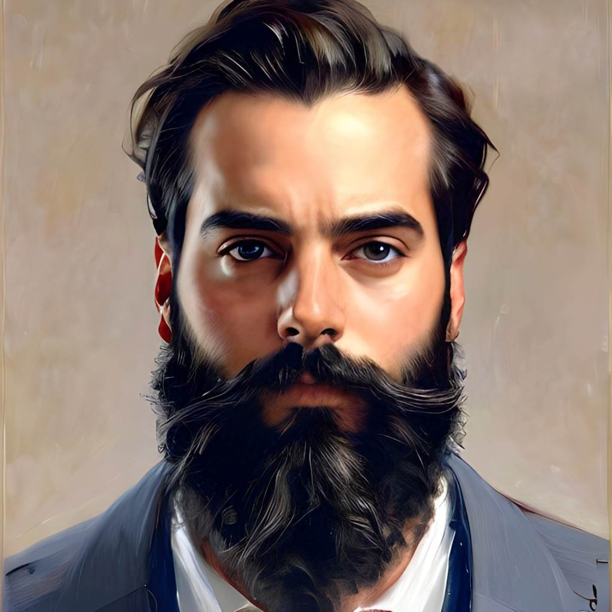

Our team is a group of three passionate web designers who have come
together to participate in the Hackathon at Concordia University. We are
all driven by a love for technology and a desire to push the boundaries
of what is possible with web design. We are excited about the
opportunity to integrate NFC functions into our project and are
confident that we have the skills and expertise necessary to make it a
success.

Eyad, the master of design,
With ideas that always shine,
Front and back, he works with pride,
Creating websites that are refined.
With KNOWTAP as his latest feat,
A web design project, grand and neat,
He brings his visions to life,
Making the web a more beautiful sight.
Mohammad crafted with care and skill, A sign-in page, for KNOWTAP
still. A portal for knowledge, to be explored With ease and grace, its
secrets to be stored
Badr, the data master,
With skills that are faster,
Designing databases with care,
Making sure all data is there.
Backend expert, he stands tall,
With knowledge that is sure to enthrall,
Organizing information with precision,
Badr's work is a true decision.